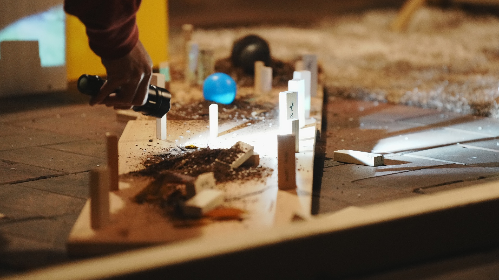

About
아이모멘트는 나와 우리의 순간들을 시작으로, 작품을 통해 지금의 이야기들을 다룬다. 장르를 넘어선 창작 접근을 시도하며 예술을 통해 일상이 시적 은유의 순간이 되기를 희망한다. 거리와 공공공간에서 작품을 발표하며 공간과 장소를 매개하는 여러 기억을 작품의 소재로 삼는다.
초기 작업이었던 [고백]에서 신체와 오브제에 대한 관심으로부터 창작을 시작해왔다면, 이러한 작업 방식은 이내 공간과 장소의 이야기에 반응하는 [생동감]으로 확장 되었으며, 본격적으로 리서치 방법론을 도입하기 시작했던 [지게꾼]과 [모델하우스]에서는 공간과 장소의 이야기에 개입하거나 새로운 겹의 서사를 부여하는 시도를 했다. 도심 속 특정 공간 곳곳에 머무르며 창작했던 [파타모르가나: 집의 조각으로부터]에서는 공공의 장소에서 밀려난 존재들을 마주하거나, 밀려난 존재들의 성전을 세웠고, 이러한 존재들에 대한 관심은 [쉼표]와 [도시의 벽]에서도 작품의 주제와 서사로 이어졌다.
아이모멘트는 공연을 통해 관객과 함께 장소의 이야기에 깊이 잠기고, 이내 도시와 사회를 가로지르는 작은 커뮤니티를 만들기 바란다.

공연 ‘파타모르가나: 집의 조각으로부터’ (c) Daiyoon Lim
imoment@naver.com
instagram.com/imoment.arts
facebook.com/imoment.arts